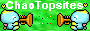

Home Contact Me Link Me Links
Home Contact Me Link Me Links  Grades Gardens Breeding Expressions Small Animals Chao Items Special Chao "Never Do"s Chao Kindergarten Competitions Evolution/Death Tiny Chao Garden Tricks
Grades Gardens Breeding Expressions Small Animals Chao Items Special Chao "Never Do"s Chao Kindergarten Competitions Evolution/Death Tiny Chao Garden Tricks  1st Evolution 2nd Evolution Chaos Chao
1st Evolution 2nd Evolution Chaos Chao  1st Evolution 2nd Evolution Chaos Chao
1st Evolution 2nd Evolution Chaos Chao  1st Evolution 2nd Evolution Chaos Chao
1st Evolution 2nd Evolution Chaos Chao 

Special Chao are unique chao with special features. These unique chao are Monotone Chao, Two-Tone Chao, Invisible Chao, Translucent Chao, and Shiny Chao.
Invisible Chao
Invisible Chao are chao with the only visible parts being their wings, their eyes, and their emotiball. Invisible Chao are made by breeding a Jewel Chao (a chao that isn't a normal one that you buy from the GBA game) and breeding types of certain shiny color chao. The combinations for getting a Jewel Chao are: Shiny White + Any Jewel Chao, Shiny Yellow + Any Jewel Chao, Shiny Pink + Any Jewel Chao, and Shiny Lime Green + Sapphire Jewel Chao.
Translucent Chao
Translucent Chao are chao with the only non-see-through visible parts being their wings, their eyes, and their emotiball. They are different from invisible chao because you can see their skin and skin color but the skin is see-through. Making a translucent chao is very similar to making an invisible chao but is slightly easier because you have more color options. The way to make a translucent chao is to mate any shiny colored chao bought from the black market (except for Shiny Yellow, Shiny White, Shiny Pink, and Shiny Lime Green) with Any Jewel Chao bought from the GBA. NOTE: All above images were from the same chao made through a mating of a Shiny Blue Chao and a Jewel Chao.
Statistics for Translucent Chao Color.
Shiny Brown Chao + Jewel Chao = White-colored with a tiny bit of light blue in it. Shiny Orange Chao + Jewel Chao = Lime-Green-colored with yellow top of head, feet, and hands. Shiny Green Chao + Jewel Chao = A green translucent chao. Shiny Blue Chao + Jewel Chao = A normal colored see through chao. Shiny Purple Chao + Jewel Chao = Sky-Blue-colored with green top of head, feet, and hands. Shiny Sky Blue Chao + Jewel Chao = Light Blue and Light Green chao with yellow top of head, feet, and hands. Shiny Black Chao + Jewel Chao = [BEING TESTED] Shiny Red Chao + Jewel Chao = Green with yellow top of head, feet, and hands. Shiny Pink Chao + Jewel Chao = [BEING TESTED] Shiny White Chao + Jewel Chao = Invisible Chao
Shiny Normal Chao
A Shiny Normal Chao is basically a normal chao (like a baby chao) that is shiny. You get this chao but simply mating a normal chao that evolved and has no special characteristics with any shiny color chao from the black market.
Two-Tone Chao
A Two-Tone Chao is a chao with multiple colors. Above is a picture of a two-toned chao (made by me, his name is Jango). As you can see, he has a blue body but his feet, hands, and top of head are purple. You may make a two-tone chao by breeding a monotone or shiny monotone chao and a normal chao. Success also is not always guaranteed when trying to make a two-tone chao. Sometimes it works and other times you will just get a chao with one solid color.
Monotone Normal Chao
A Monotone Normal chao is extremely rare and very special. A monotone normal chao is a chao (that looks like at birth) a regular white-colored chao. But if you pet it with for example, a dark side character, the white colored chao will start to turn a pinkish color! But if petted with a hero character, the only thing that will change is the color of its emotiball. After evolution and if you chose to make it a dark Monotone Normal chao, it will become a deep red. To get a monotone normal chao, you mate a regular evolved chao with a monotone, shiny monotone, or jewel chao. The result is not always a Monotone Normal and in fact, you are more likely to get a regular chao or some other color rather than a monotone normal. But it will be easy to tell if you have a monotone by petting it with a dark character a lot.